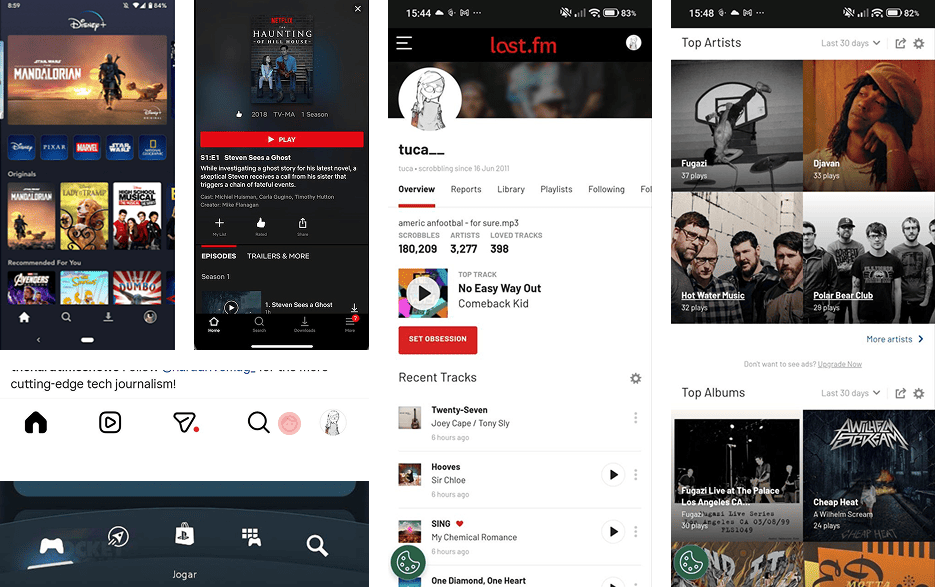
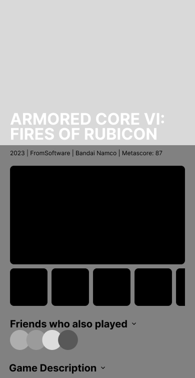
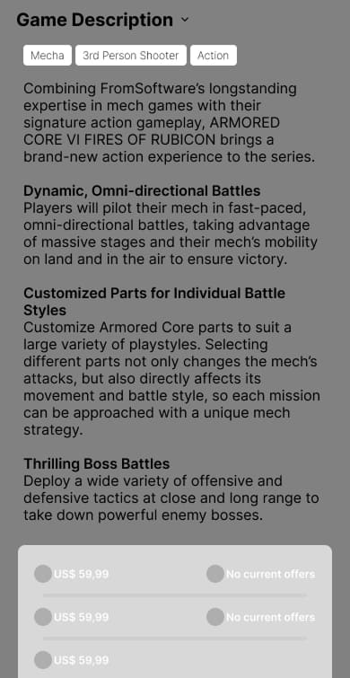
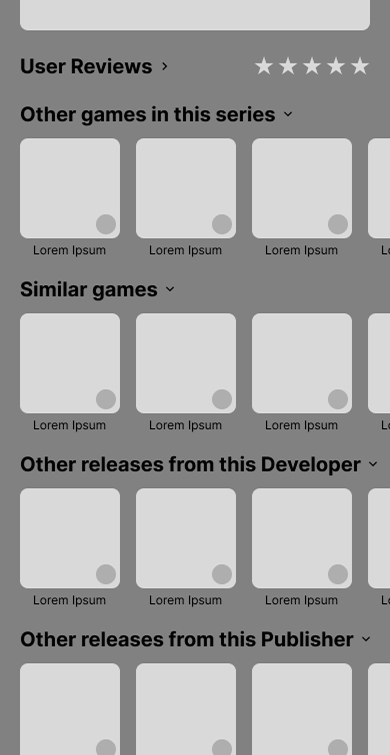
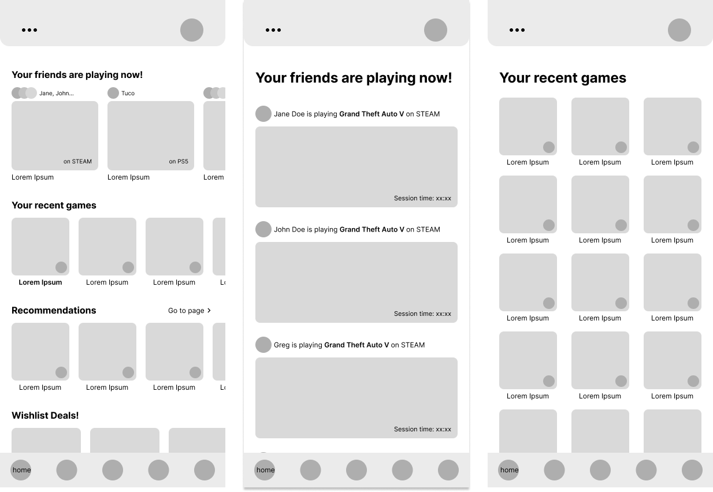
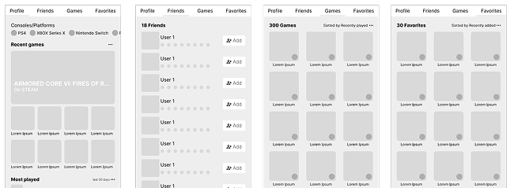
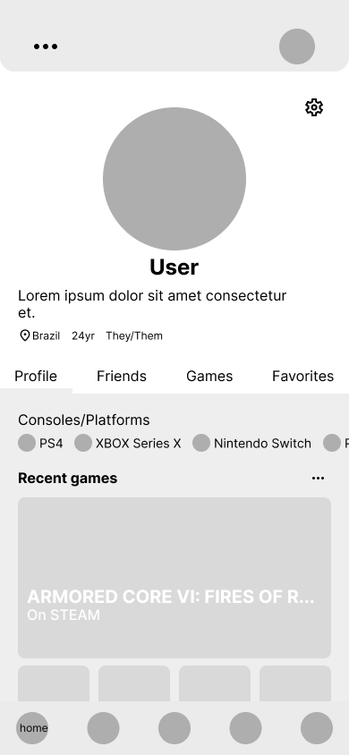
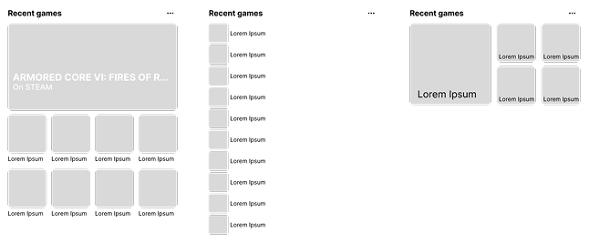
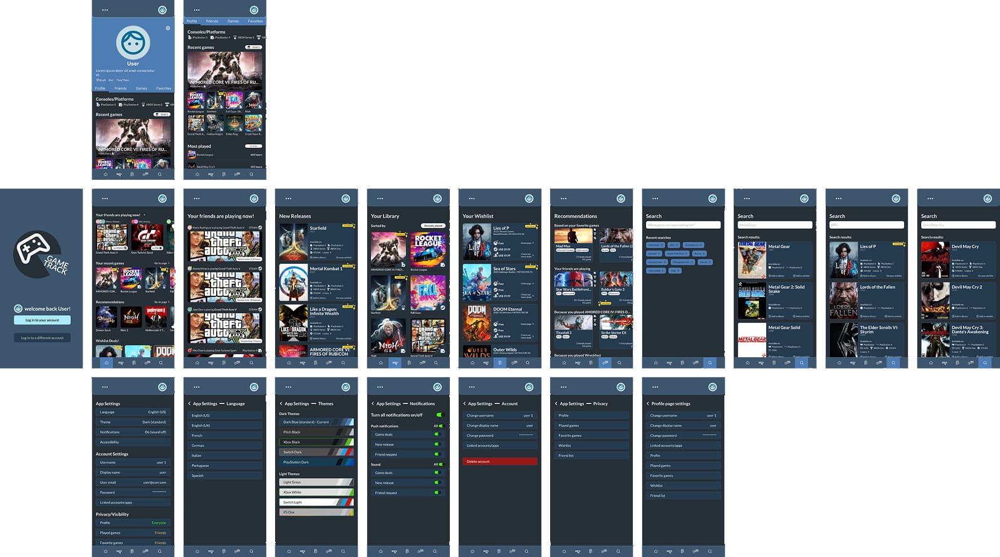

role:
product designer
timeline:
3 weeks
tools:
figma
type:
concept project
responsibilities
research
information architecture
wireframing
ui design
prototype
design system


role:
product designer
timeline:
3 weeks
tools:
figma
type:
concept project
responsibilities
research
information architecture
wireframing
ui design
prototype
design system
Designing a unified experience for modern gamers
Game Track is a conceptual mobile application that explores how players could manage their gaming life across multiple platforms through a single, cohesive experience.
Today, games, achievements, wishlists and friends are spread across services like Steam, PlayStation, Xbox, Nintendo and Epic Games. While each platform works well independently, switching between them creates unnecessary friction for players who simply want to organize their hobby.
Rather than designing another storefront, the goal was to rethink how information from different ecosystems could be brought together into a product that prioritizes discovery, organization and social interaction.
This project became an exercise in simplifying a complex digital ecosystem through thoughtful information architecture and familiar interaction patterns.
Understanding the Problem
The challenge wasn't designing beautiful interfaces.
It was designing an interface capable of organizing a large amount of information without overwhelming the user.
A player may simultaneously:
If all of this information receives equal importance, the experience quickly becomes noisy and difficult to navigate.
The objective therefore became identifying which information should be surfaced first, which could remain secondary, and how users could move naturally between these different activities.

Instead of searching for a direct competitor, I analyzed products that successfully solved individual aspects of the experience.
Streaming platforms inspired the organization of extensive content libraries, allowing users to browse large collections without feeling overwhelmed.
Social platforms demonstrated how activity feeds and personal profiles encourage engagement and community interaction.
Gaming platforms provided familiar navigation patterns that players already understand, reducing the learning curve while keeping the interface intuitive.
Rather than copying a single product, the final experience combines interaction patterns users already know into a solution designed specifically for gaming.
Throughout the project, every design decision was guided by one central question:
"How can complex information become easier to navigate?"
To answer this, I established four design principles before developing the interface.
Prioritize familiarity
Users shouldn't need to learn new interaction patterns simply to organize their games.
Whenever possible, existing conventions from streaming services and social platforms were reused to reduce cognitive effort.




Surface information progressively
Showing every available feature at once would make the application intimidating.
Instead, information is revealed progressively through expandable sections, categorized content and contextual actions, allowing users to focus only on what matters at that moment.
Make discovery effortless
The home screen was designed to answer the questions players ask most frequently.
Instead of forcing users to search for these answers, the interface brings them directly to the main screen.


Build a scalable system
Because gaming libraries constantly grow, the interface was built around reusable layouts and modular components capable of supporting additional features without disrupting the overall experience.

One of the largest design challenges involved deciding how much information should appear on each screen.
For example, every game contains screenshots, trailers, descriptions, developers, publishers, reviews, achievements, DLC, pricing information and recommendations.
Presenting everything simultaneously would increase cognitive load and make scanning difficult.
Instead, content was grouped into expandable sections that allow users to progressively explore details while keeping the overall interface clean and approachable.
This same principle was applied throughout the application, creating a consistent experience regardless of the amount of information being displayed.
Navigation was designed around user intent rather than application structure.
The objective wasn't simply helping users move between screens, but helping them accomplish common tasks with as few decisions as possible.
Whether browsing recommendations, checking a friend's activity or reviewing a wishlist, users remain within familiar navigation patterns that reduce context switching and make exploration feel natural.

Visually, the interface takes inspiration from modern entertainment platforms while maintaining a distinct identity centered around gaming.
A restrained color palette allows artwork to become the primary visual element, while typography and spacing establish a clear hierarchy across large collections of content.
The result is an interface that feels information-rich without becoming visually overwhelming.

The completed prototype demonstrates how multiple gaming ecosystems could coexist within a single experience.
Rather than functioning as another marketplace, Game Track focuses on helping players discover games, organize their libraries and connect with friends through a product that feels familiar from the first interaction.
Designing the entire application—from onboarding and home screens to profiles, game pages and recommendations—provided valuable experience designing a scalable product where navigation, hierarchy and consistency are just as important as visual aesthetics.

This project fundamentally changed the way I think about interface design.
Initially, I approached the challenge as designing screens.
As the project evolved, I realized the real challenge was organizing information.
Every layout became an exercise in deciding what deserved the user's attention first, what could remain secondary and how different pieces of information should relate to one another.
Looking back, I would spend more time validating these decisions through usability testing and accessibility reviews. However, the project reinforced an idea that continues to influence my work today: